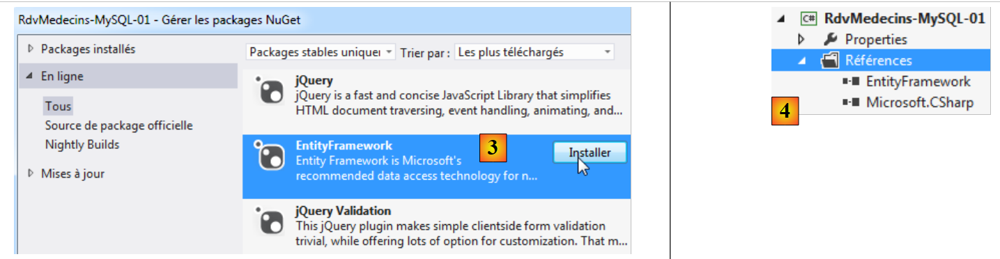

4. Caso di studio con MySQL 5.5.28
4.1. Installazione degli strumenti
Gli strumenti da installare sono i seguenti:
- il DBMS: [http://dev.mysql.com/downloads/];
- uno strumento di amministrazione: EMS SQL Manager for MySQL Freeware [http://www.sqlmanager.net/fr/products/mysql/manager/download].
Negli esempi seguenti, l'utente root ha come password "root".
Avviamo MySQL5. In questo caso, lo facciamo dalla finestra Servizi di Windows [1]. In [2], il DBMS è in esecuzione.
 |
Ora avviamo lo strumento [SQL Manager Lite for MySQL], che useremo per amministrare il DBMS [3].
 |
- In [4] creiamo un nuovo database;
- in [5], specifichiamo il nome del database;
 |
- in [5], effettuiamo l'accesso come root / root;
- In [6], convalidiamo l'istruzione SQL da eseguire;
 |
- In [7], il database è stato creato. Ora deve essere registrato in [EMS Manager]. Le informazioni sono corrette. Fare clic su [OK];
- In [8], ci colleghiamo ad esso;
- In [9], [EMS Manager] visualizza il database, che al momento è vuoto.
Ora collegheremo un progetto VS 2012 a questo database.
4.2. Creazione del database dalle entità
Creiamo il progetto console VS 2012 [RdvMedecins-MySQL-01] [1] riportato di seguito:
 |
- In [2], aggiungiamo i riferimenti al progetto tramite NuGet;
 |
- In [3], aggiungiamo il riferimento a EF 5;
- in [4], ora è presente nei riferimenti;
 |
- in [5], ripetiamo la procedura per aggiungere [MySQL.Data.Entities], che è un connettore ADO.NET per Entity Framework. Per trovare il pacchetto, possiamo utilizzare la casella di ricerca [6];
- in [7] compaiono due riferimenti: [MySQL.Data.Entities] e [MySQL.Data], essendo quest'ultimo una dipendenza del primo.
Ora, compileremo il progetto [RdvMedecins-MySQL-01] basato sul progetto [RdvMedecins-SqlServer-01].
 |
- In [1], copiare gli elementi selezionati;
- In [2], incollali nel progetto [RdvMedecins-MySQL-01];
- in [3], poiché sono presenti più programmi con un metodo [Main], è necessario specificare il progetto di avvio.
A questo punto, il progetto dovrebbe compilarsi correttamente. Ora modificheremo il file di configurazione [App.config], che configura la stringa di connessione al database e il DbProviderFactory. Il risultato sarà il seguente:
<?xml version="1.0" encoding="utf-8"?>
<configuration>
<configSections>
<!-- For more information on Entity Framework configuration, visit http://go.microsoft.com/fwlink/?LinkID=237468 -->
<section name="entityFramework" type="System.Data.Entity.Internal.ConfigFile.EntityFrameworkSection, EntityFramework, Version=5.0.0.0, Culture=neutral, PublicKeyToken=b77a5c561934e089" requirePermission="false" />
</configSections>
<startup>
<supportedRuntime version="v4.0" sku=".NETFramework,Version=v4.5" />
</startup>
<entityFramework>
<defaultConnectionFactory type="System.Data.Entity.Infrastructure.SqlConnectionFactory, EntityFramework" />
</entityFramework>
<!-- connecting chain-->
<connectionStrings>
<add name="monContexte"
connectionString="Server=localhost;Database=rdvmedecins-ef;Uid=root;Pwd=root;"
providerName="MySql.Data.MySqlClient" />
</connectionStrings>
<!-- the factory provider -->
<system.data>
<DbProviderFactories>
<add name="MySQL Data Provider" invariant="MySql.Data.MySqlClient" description=".Net Framework Data Provider for MySQL"
type="MySql.Data.MySqlClient.MySqlClientFactory, MySql.Data, Version=6.5.4.0, Culture=neutral, PublicKeyToken=C5687FC88969C44D"
/>
</DbProviderFactories>
</system.data>
</configuration>
- riga 17: la stringa di connessione al database MySQL [rdvmedecins-ef] che abbiamo creato;
- riga 24: la versione deve corrispondere a quella del riferimento [MySql.Data] nel progetto [1]:
 |
C'è anche una configurazione nel file [Entities.cs] in cui specifichiamo i nomi delle tabelle e lo schema a cui appartengono. Questo può variare a seconda del DBMS. È il caso qui, dove non ci sarà alcuno schema. Il file [Entities.cs] cambia come segue:
[Table("MEDECINS")]
public class Medecin : Personne
{...}
[Table("CLIENTS")]
public class Client : Personne
{...}
[Table("CRENEAUX")]
public class Creneau
{...}
[Table("RVS")]
public class Rv
{...}
Eseguiamo il programma [CreateDB_01] [2]. Otteniamo la seguente eccezione:
Lo stesso errore compare quattro volte (righe 2–5). Il tipo rowversion suggerisce il campo con l'annotazione [Timestamp] nelle entità:
[Column("TIMESTAMP")]
[Timestamp]
public byte[] Timestamp { get; set; }
Decidiamo di sostituire queste tre righe con quanto segue:
[ConcurrencyCheck]
[Column("VERSIONING")]
public DateTime? Versioning { get; set; }
Modifichiamo il tipo di colonna da byte[] a DateTime?. Lo facciamo perché MySQL dispone di un tipo [TIMESTAMP] che rappresenta una data/ora, e una colonna di questo tipo viene aggiornata automaticamente da MySQL ogni volta che la riga viene aggiornata. Questo ci consentirà di gestire l'accesso simultaneo.
L'annotazione [Timestamp] può essere applicata solo a una colonna di tipo byte[]. La sostituiamo con l'annotazione [ConcurrencyCheck]. Entrambe queste annotazioni gestiscono l'accesso simultaneo. Lo facciamo per tutte e quattro le entità e poi rieseguiamo l'applicazione. Otteniamo quindi il seguente errore:
La riga 1 indica un errore di sintassi nell'SQL eseguito da MySQL. Poiché questo non è stato generato da noi ma dal provider ADO.NET di MySQL, non possiamo correggere questo problema. Tuttavia, possiamo vedere che le tabelle sono state create [1] qui sotto:
 |
- in [2], vediamo la struttura della tabella [clients] [3].
È necessario apportare diverse modifiche al database generato:
- il tipo di dati della colonna [VERSIONING] non è corretto. Deve essere impostato sul tipo [TIMESTAMP] di MySQL;
- Ricordiamo che la tabella [rvs] ha un vincolo di unicità. Non è stato creato durante questa generazione;
- Il connettore ADO.NET di SQL Server ha generato chiavi esterne con la clausola ON DELETE CASCADE. Il connettore ADO.NET di MySQL non lo ha fatto.
Come abbiamo fatto con SQL Server, dobbiamo quindi modificare il database generato. Non mostriamo come apportare le modifiche. Forniamo semplicemente lo script per la creazione del database:
# SQL Manager Lite for MySQL 5.3.0.2
# ---------------------------------------
# Host : localhost
# Port : 3306
# Database : rdvmedecins-ef
/*!40101 SET @OLD_CHARACTER_SET_CLIENT=@@CHARACTER_SET_CLIENT */;
/*!40101 SET @OLD_CHARACTER_SET_RESULTS=@@CHARACTER_SET_RESULTS */;
/*!40101 SET @OLD_COLLATION_CONNECTION=@@COLLATION_CONNECTION */;
/*!40101 SET NAMES utf8 */;
SET FOREIGN_KEY_CHECKS=0;
USE `rdvmedecins-ef`;
#
# Structure for the `clients` table :
#
CREATE TABLE `clients` (
`ID` INTEGER(11) NOT NULL AUTO_INCREMENT,
`NOM` VARCHAR(30) COLLATE utf8_general_ci NOT NULL,
`PRENOM` VARCHAR(30) COLLATE utf8_general_ci NOT NULL,
`TITRE` VARCHAR(5) COLLATE utf8_general_ci NOT NULL,
`VERSIONING` TIMESTAMP NOT NULL ON UPDATE CURRENT_TIMESTAMP DEFAULT CURRENT_TIMESTAMP,
PRIMARY KEY USING BTREE (`ID`) COMMENT ''
)ENGINE=InnoDB
AUTO_INCREMENT=96 AVG_ROW_LENGTH=4096 CHARACTER SET 'utf8' COLLATE 'utf8_general_ci'
COMMENT=''
;
#
# Structure for the `medecins` table :
#
CREATE TABLE `medecins` (
`ID` INTEGER(11) NOT NULL AUTO_INCREMENT,
`NOM` VARCHAR(30) COLLATE utf8_general_ci NOT NULL,
`PRENOM` VARCHAR(30) COLLATE utf8_general_ci NOT NULL,
`TITRE` VARCHAR(5) COLLATE utf8_general_ci NOT NULL,
`VERSIONING` TIMESTAMP NOT NULL ON UPDATE CURRENT_TIMESTAMP DEFAULT CURRENT_TIMESTAMP,
PRIMARY KEY USING BTREE (`ID`) COMMENT ''
)ENGINE=InnoDB
AUTO_INCREMENT=56 AVG_ROW_LENGTH=4096 CHARACTER SET 'utf8' COLLATE 'utf8_general_ci'
COMMENT=''
;
#
# Structure for the `creneaux` table :
#
CREATE TABLE `creneaux` (
`ID` INTEGER(11) NOT NULL AUTO_INCREMENT,
`HDEBUT` INTEGER(11) NOT NULL,
`MDEBUT` INTEGER(11) NOT NULL,
`HFIN` INTEGER(11) NOT NULL,
`MFIN` INTEGER(11) NOT NULL,
`MEDECIN_ID` INTEGER(11) NOT NULL,
`VERSIONING` TIMESTAMP NOT NULL ON UPDATE CURRENT_TIMESTAMP DEFAULT CURRENT_TIMESTAMP,
PRIMARY KEY USING BTREE (`ID`) COMMENT '',
INDEX `MEDECIN_ID` USING BTREE (`MEDECIN_ID`) COMMENT '',
CONSTRAINT `creneaux_ibfk_1` FOREIGN KEY (`MEDECIN_ID`) REFERENCES `medecins` (`ID`) ON DELETE CASCADE ON UPDATE NO ACTION
)ENGINE=InnoDB
AUTO_INCREMENT=472 AVG_ROW_LENGTH=455 CHARACTER SET 'utf8' COLLATE 'utf8_general_ci'
COMMENT=''
;
#
# Structure for the `rvs` table :
#
CREATE TABLE `rvs` (
`ID` INTEGER(11) NOT NULL AUTO_INCREMENT,
`JOUR` DATE NOT NULL,
`CRENEAU_ID` INTEGER(11) NOT NULL,
`CLIENT_ID` INTEGER(11) NOT NULL,
`VERSIONING` TIMESTAMP NOT NULL ON UPDATE CURRENT_TIMESTAMP DEFAULT CURRENT_TIMESTAMP,
PRIMARY KEY USING BTREE (`ID`) COMMENT '',
UNIQUE INDEX `CRENEAU_ID_JOUR` USING BTREE (`JOUR`, `CRENEAU_ID`) COMMENT '',
INDEX `CRENEAU_ID` USING BTREE (`CRENEAU_ID`) COMMENT '',
INDEX `CLIENT_ID` USING BTREE (`CLIENT_ID`) COMMENT '',
CONSTRAINT `rvs_ibfk_2` FOREIGN KEY (`CLIENT_ID`) REFERENCES `clients` (`ID`) ON DELETE CASCADE ON UPDATE NO ACTION,
CONSTRAINT `rvs_ibfk_1` FOREIGN KEY (`CRENEAU_ID`) REFERENCES `creneaux` (`ID`) ON DELETE CASCADE ON UPDATE NO ACTION
)ENGINE=InnoDB
AUTO_INCREMENT=28 AVG_ROW_LENGTH=16384 CHARACTER SET 'utf8' COLLATE 'utf8_general_ci'
COMMENT=''
;
- righe 22, 38, 54, 74: le chiavi primarie (ID) delle tabelle sono di tipo AUTO_INCREMENT e vengono quindi generate da MySQL;
- righe 26, 42, 60, 78: la colonna VERSIONING è di tipo TIMESTAMP e viene aggiornata durante un INSERT o un UPDATE;
- riga 63: la chiave esterna dalla tabella [slots] alla tabella [doctors] con la clausola ON DELETE CASCADE;
- riga 80: il vincolo di unicità sulla tabella [rvs];
- riga 83: la chiave esterna dalla tabella [rvs] alla tabella [slots] con la clausola ON DELETE CASCADE;
- riga 84: la chiave esterna dalla tabella [rvs] alla tabella [clients] con la clausola ON DELETE CASCADE;
Lo script per la generazione delle tabelle nel database MySQL [rvmedecins-ef] è stato inserito nella cartella [RdvMedecins / databases / mysql]. Il lettore può caricarlo ed eseguirlo per creare le tabelle.
Una volta fatto ciò, è possibile eseguire i vari programmi del progetto. Essi producono gli stessi risultati ottenuti con SQL Server, ad eccezione del programma [ModifyDetachedEntities], che va in crash. Per capirne il motivo, possiamo esaminare l'output del programma [ModifyAttachedEntities]:
- Righe 1-2: un client prima che il contesto venga salvato;
- righe 3-4: il client dopo il salvataggio. Ha una chiave primaria ma nessun valore per il campo [Versioning], mentre SQL Server ha aggiornato il campo [Timestamp] dell'entità.
Ora esaminiamo il codice del programma [ModifyDetachedEntities] che va in crash:
using System;
...
namespace RdvMedecins_01
{
class ModifyDetachedEntities
{
static void Main(string[] args)
{
Client client1;
// empty the current base
Erase();
// add a customer
using (var context = new RdvMedecinsContext())
{
// customer creation
client1 = new Client { Titre = "x", Nom = "x", Prenom = "x" };
// add customer to context
context.Clients.Add(client1);
// save the context
context.SaveChanges();
}
// basic view
Dump("1-----------------------------");
// client1 is not in the context - we modify it
client1.Nom = "y";
// out-of-context entity modification
using (var context = new RdvMedecinsContext())
{
// here we have a new empty context
// we put client1 in the context in a modified state
context.Entry(client1).State = EntityState.Modified;
// save the context
context.SaveChanges();
}
...
}
static void Erase()
{
...
}
static void Dump(string str)
{
...
}
}
}
- Riga 20: un cliente viene salvato. Ora ha la sua chiave primaria, ma basata sulla sua versione;
- riga 33: viene effettuata una modifica su client1. L'operazione fallisce perché non possiede la versione memorizzata nel database.
Risolviamo il problema inserendo il seguente codice tra le righe 25 e 26:
// retrieve client1 to get its version
using (var context = new RdvMedecinsContext())
{
// customer2 will be in the context
Client client2 = context.Clients.Find(client1.Id);
// set the version of client1 to that of client2
client1.Versioning = client2.Versioning;
}
Ora, l'entità [client1] ha la stessa versione presente nel database e può quindi essere utilizzata per aggiornare la riga nel database.
4.3. Architettura multilivello basata su EF 5
Torniamo al caso di studio descritto nella sezione 2.
 |
Inizieremo con la creazione del livello di accesso ai dati [DAO]. A tal fine, creiamo il progetto console VS 2012 [RdvMedecins-MySQL-02] [1]:
 |
- in [2], i riferimenti [Common.Logging, EntityFramework, MySql.Data, MySql.Data.Entity, Spring.Core] vengono aggiunti utilizzando NuGet;
- in [3], la cartella [Models] viene copiata dal progetto [RdvMedecins-MySQL-01];
 |
- in [4], le cartelle [Dao, Exception, Tests] e il file [App.config] vengono copiati dal progetto [RdvMedecins-SqlServer-02];
- in [5], il file [Program.cs] è stato eliminato;
- in [6], il progetto è configurato per eseguire il programma di test del livello [DAO].
Nel file [App.config], le informazioni relative al database SQL Server vengono sostituite con quelle del database MySQL. Queste informazioni sono disponibili nel file [App.config] del progetto [RdvMedecins-MySQL-01]:
<!-- connecting chain-->
<connectionStrings>
<add name="monContexte"
connectionString="Server=localhost;Database=rdvmedecins-ef;Uid=root;Pwd=root;"
providerName="MySql.Data.MySqlClient" />
</connectionStrings>
<!-- the factory provider -->
<system.data>
<DbProviderFactories>
<add name="MySQL Data Provider" invariant="MySql.Data.MySqlClient" description=".Net Framework Data Provider for MySQL"
type="MySql.Data.MySqlClient.MySqlClientFactory, MySql.Data, Version=6.5.4.0, Culture=neutral, PublicKeyToken=C5687FC88969C44D"
/>
</DbProviderFactories>
</system.data>
Anche gli oggetti gestiti da Spring cambiano. Attualmente abbiamo:
<!-- spring configuration -->
<spring>
<context>
<resource uri="config://spring/objects" />
</context>
<objects xmlns="http://www.springframework.net">
<object id="rdvmedecinsDao" type="RdvMedecins.Dao.Dao,RdvMedecins-SqlServer-02" />
</objects>
</spring>
La riga 7 fa riferimento all'assembly del progetto [RdvMedecins-SqlServer-02]. L'assembly è ora [RdvMedecins-MySQL-02].
Fatto ciò, siamo pronti per eseguire il test del livello [DAO]. Innanzitutto, dobbiamo assicurarci che il database sia popolato (utilizzando il programma [Fill] del progetto [RdvMedecins-MySQL-01]). Il programma di test viene eseguito con successo.
Creiamo la DLL del progetto come abbiamo fatto per il progetto [RdvMedecins-SqlServer-02] e inseriamo tutte le DLL del progetto in una cartella [lib] creata all'interno di [RdvMedecins-MySQL-02]. Queste fungeranno da riferimenti per il progetto web [RdvMedecins-MySQL-03], di cui parleremo in seguito.
 |
Ora siamo pronti per compilare il livello [ASP.NET] della nostra applicazione:
 |
Inizieremo con il progetto [RdvMedecins-SqlServer-03]. Duplichiamo la cartella di questo progetto in [RdvMedecins-MySQL-03] [1]:
 |
- in [2], utilizzando VS 2012 Express for the Web, apriamo la soluzione nella cartella [RdvMedecins-MySQL-03];
- In [3], modifichiamo sia il nome della soluzione che quello del progetto;
 |
- in [4], i riferimenti attuali del progetto;
- in [5], li eliminiamo;
- in [6], per sostituirli con i riferimenti alle DLL che abbiamo appena salvato in una cartella [lib] all'interno del progetto [RdvMedecins-MySQL-02].
Non resta che modificare il file [Web.config]. Sostituiamo il suo contenuto attuale con il contenuto del file [App.config] del progetto [RdvMedecins-MySQL-02]. Una volta fatto questo, eseguiamo il progetto web. Funziona.
4.4. Conclusione
Riassumiamo ciò che è stato fatto per passare dal DBMS SQL Server al DBMS MySQL:
- Il campo utilizzato per gestire l'accesso simultaneo alle entità è stato modificato. La sua versione SQL Server era:
[Column("TIMESTAMP")]
[Timestamp]
public byte[] Timestamp { get; set; }
È diventato:
[ConcurrencyCheck]
[Column("VERSIONING")]
public DateTime? Versioning { get; set; }
con MySQL;
- le annotazioni [Table] che collegano un'entità a una tabella sono state modificate;
- la stringa di connessione al database e [DbProviderFactory] sono state modificate nei file di configurazione [App.config] e [Web.config];
- Dopo il salvataggio nel database, un'entità SQL Server presentava sia la chiave primaria che il timestamp. Con MySQL, presentava solo la chiave primaria. Ciò ha richiesto una modifica del codice.
Alla fine, le modifiche sono state relativamente poche, ma abbiamo comunque dovuto rivedere il codice. Stiamo ripetendo lo stesso processo per altri tre DBMS:
- Oracle Database Express Edition 11g Release 2;
- Il DBMS PostgreSQL 9.2.1;
- Il DBMS Firebird 2.1.